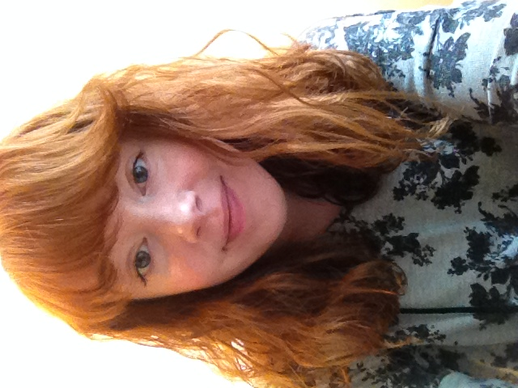

Julia Rose is a full-stack web developer based in Washington, D.C. She enjoys books, TV, animals, art, and underwater basketweaving. She's coming up blank on what to say for this first iteration of her portfolio site. Her future aspiration is to accumulate all of the world's love and attention, after which she will move on to accumulating mass.
Julia is not athletic, but she's training for her first 5K run, so that's something. All she ever wants to do is nap. The best kind of nap is the kind that takes place at her parents' house with Chip the Welsh Terrier. Here are some more cool things: pancakes. Weekends. Learning. Thunderstorms. Swimming. Christmas. Babies. Games. Painting. Movies. Pillows. Museums.